Product Photography
Silkyo Toronto
September 2024 - Current
Developed high-quality photography skills by capturing product images and videos for jewelry marketing campaigns.
My contribution includes setting up lighting, directing poses, and ensuring the focus is on both the product and the individual, creating compelling visuals that blend style and elegance.
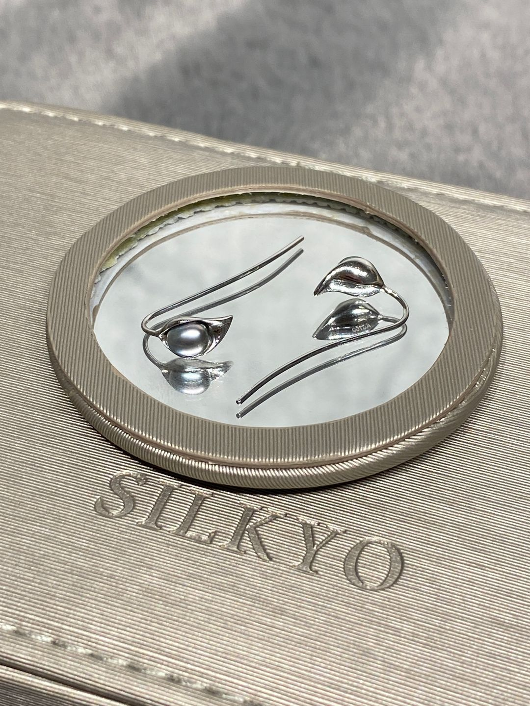
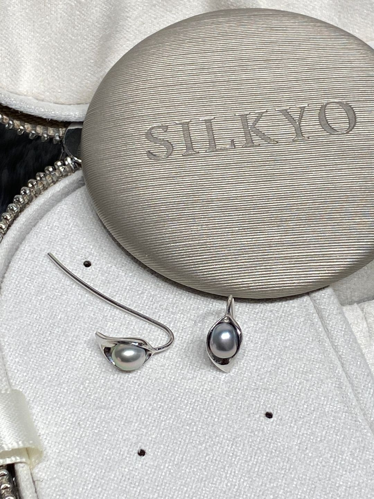
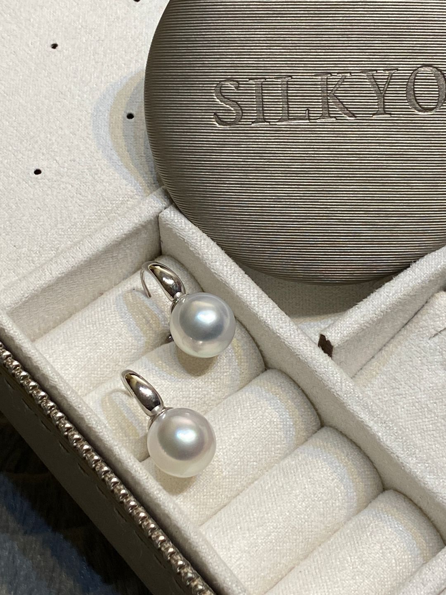
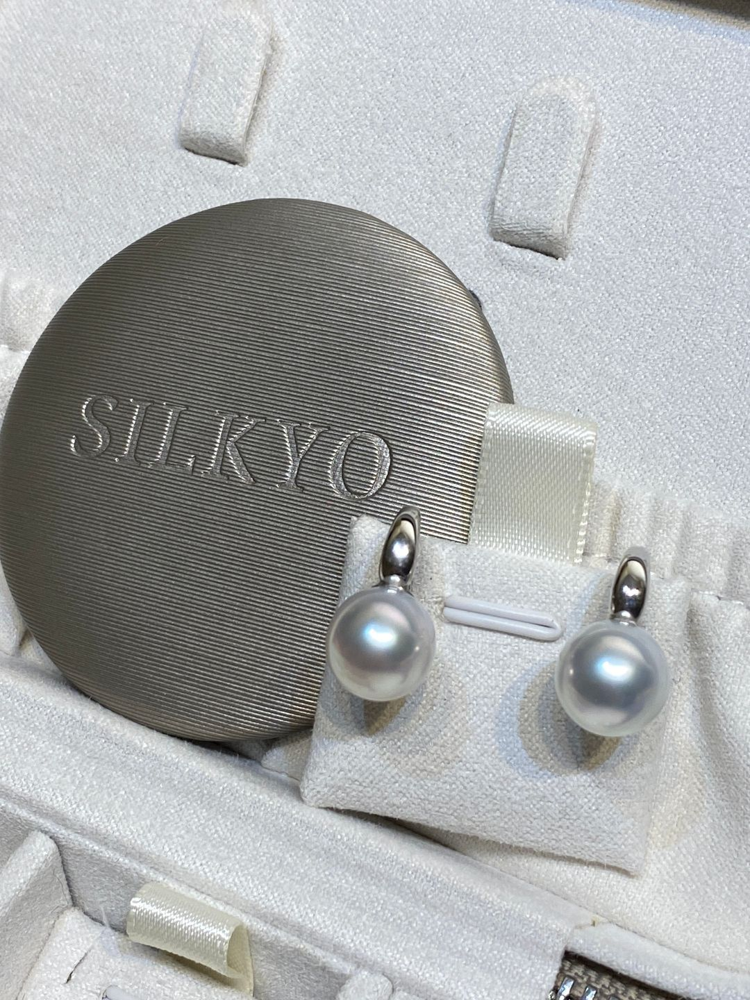
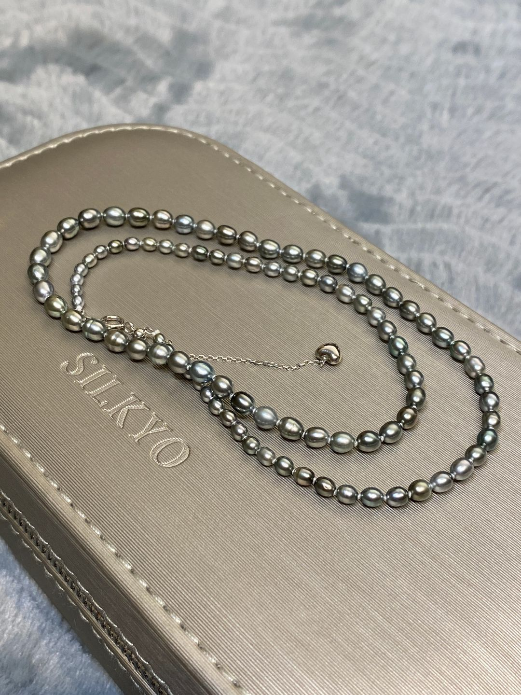
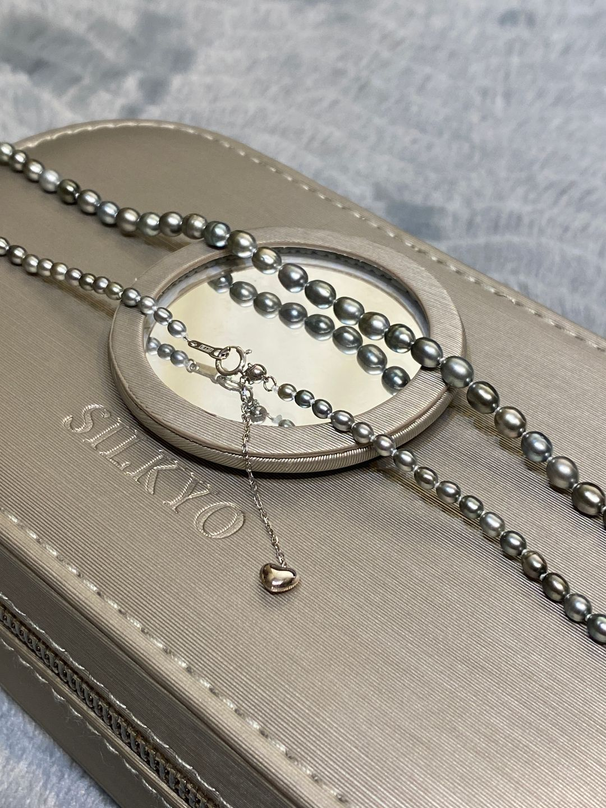
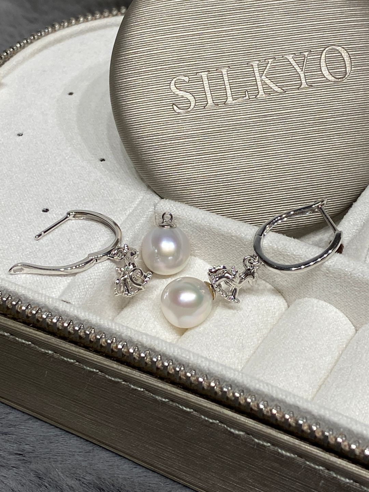
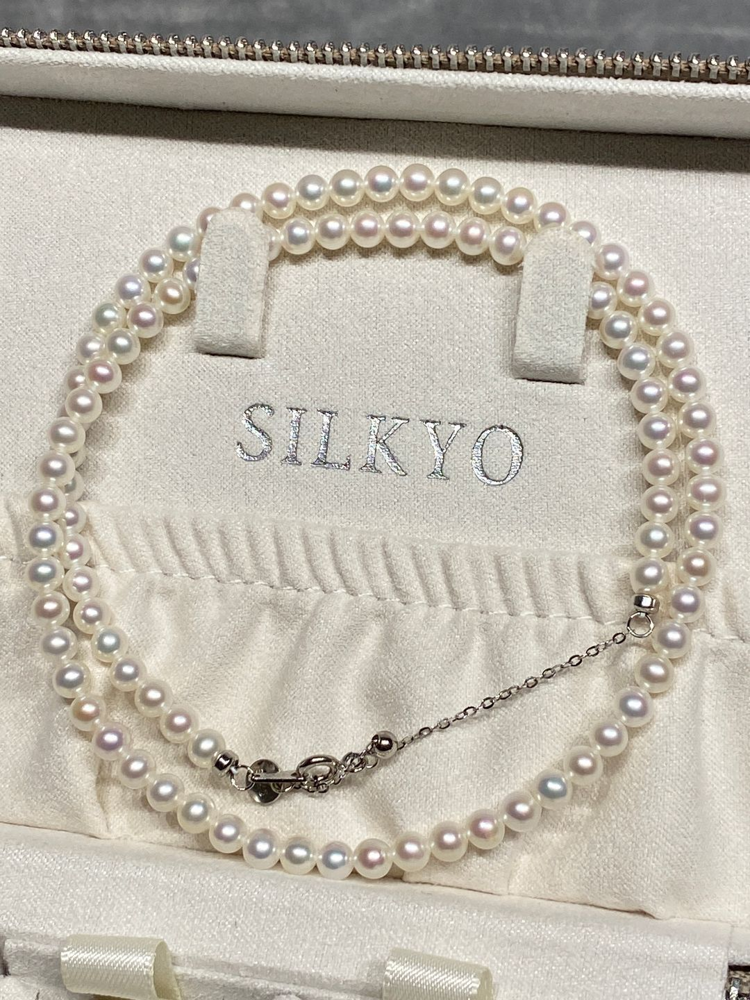
 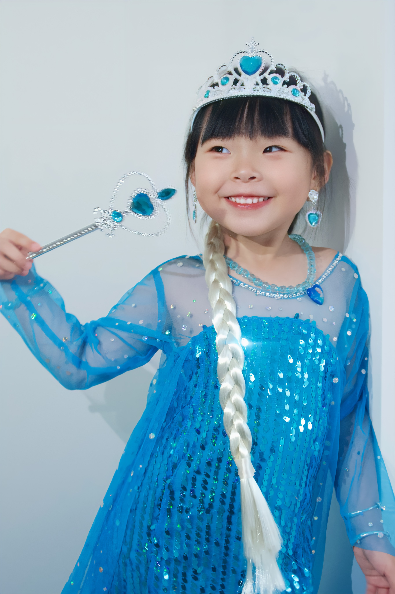
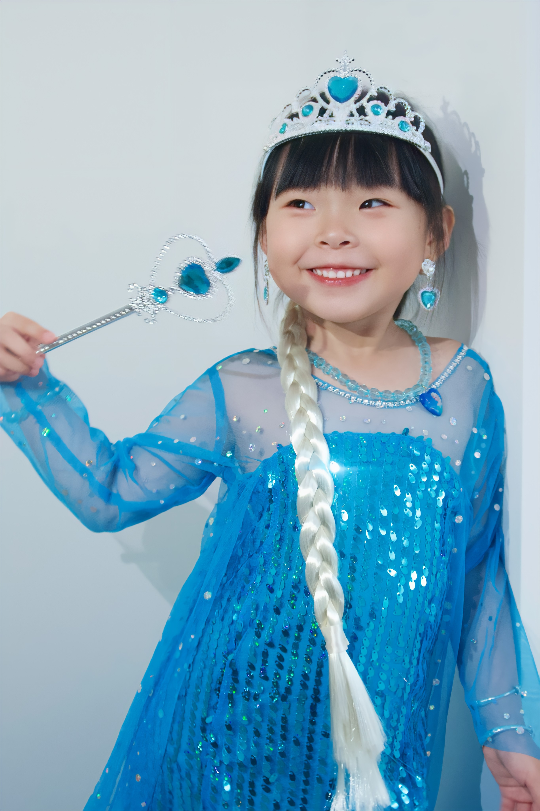
 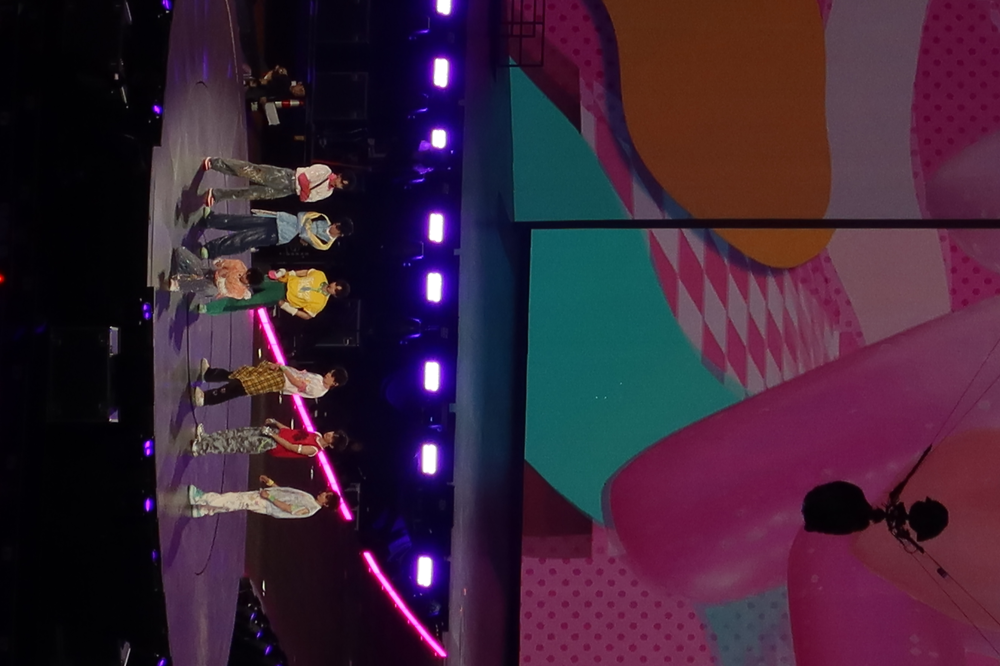
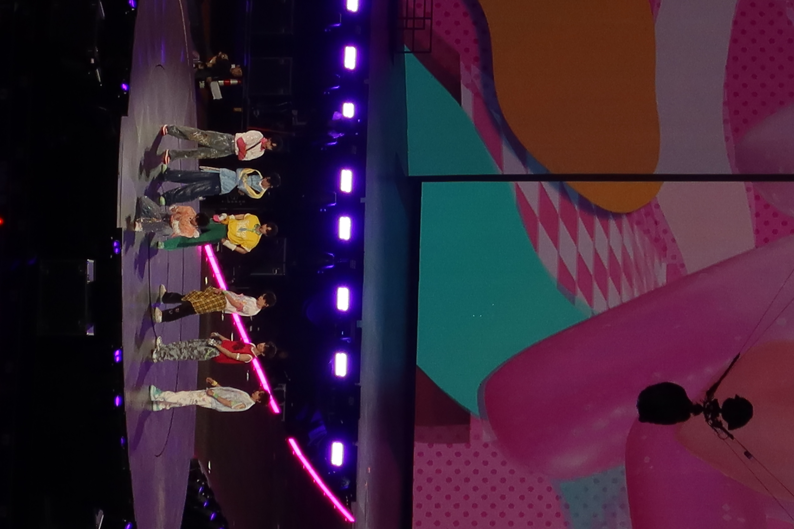